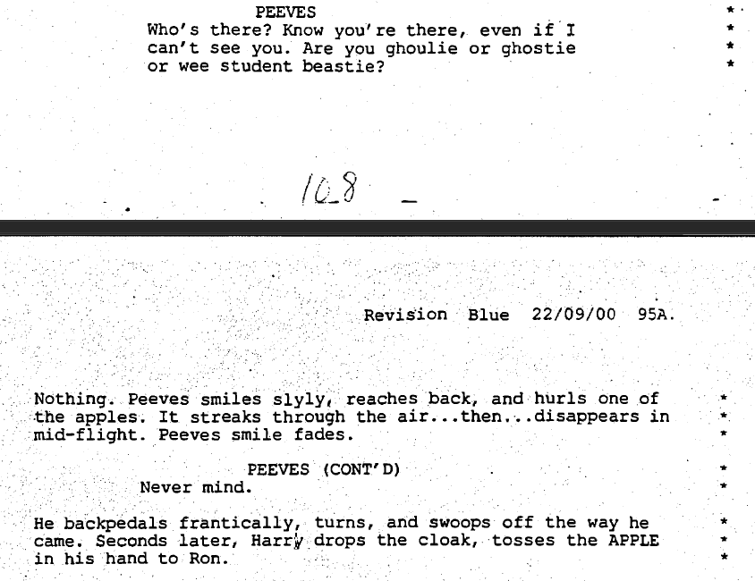
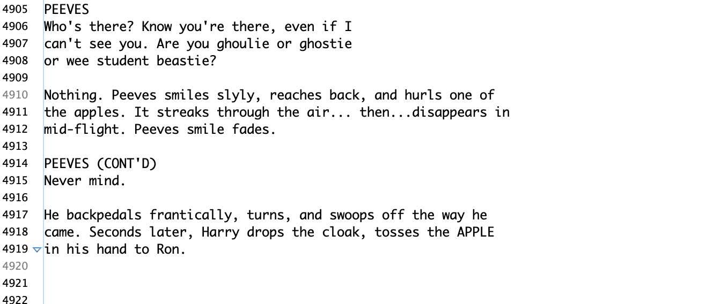
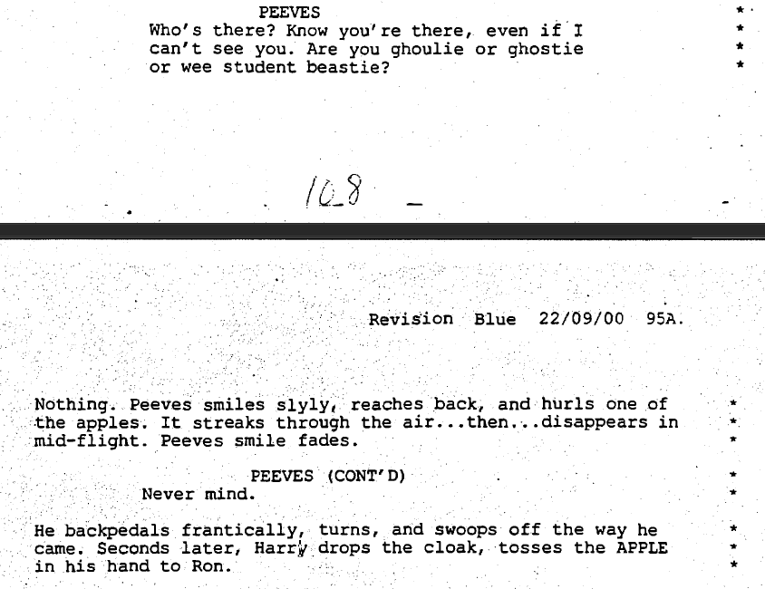
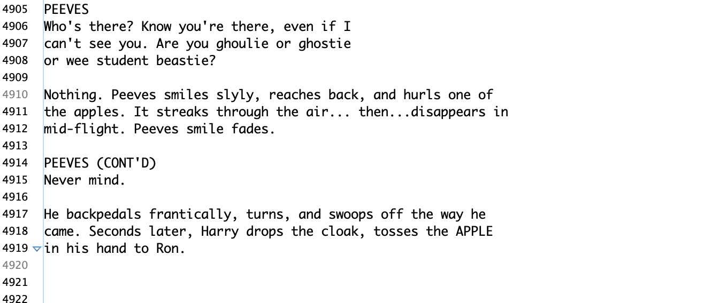

For the past couple weeks I have been attempting to clean the text file for Harry Potter and the Sorcerer’s Stone. Upon first look, there were numerous readability issues; absence of spacing between words, random characters, and additional unnecessary white space between lines. When I first started, March 9th, my goal was to clean the text file as much as possible so that I had a strong file to work with when I conducted RegEx and text analysis later on. This alone proved to be quite the challenge. While I was expecting this task to last around two weeks, I am almost 2/3 of the way through as of March 19th.
Fixing the text proved to be difficult as I referred to the PDF version of the files for accuracy. This is because at certain points of the PDF, the OCR failed to pick up various words and even whole pages of text. Thankfully, since I was reading the PDF word for word while cleaning the text file, these errors were caught and corrected immediately.
 



As you can see above, the original text file-after OCR- of Harry Potter and the Sorcerer's Stone is on the left, the PDF of the script is in the middle, and the cleaned version of the text file is on the right. As previously mentioned, the raw text file, after OCR was conducted, is very inconsistent and produces random symbols, such as line 4921. To fix these errors, I referenced the PDF (middle) and fixed the errors to the best of my abilities (right) without changing the actual script.
Additionally, while cleaning the Sorcerer’s Stone text file, I was able to mold the white spaces to better suit future RegEx patterns, which in return would make the process of RegEx go quicker and smoother. Most of the other text files that have been utilized for this project have either contained consistent patterns or chaotic, randomized patterns that made RegEx harder to achieve. In the end, the text files have properly been accessed and cleaned to ensure the most accurate digitized file of the scripts for educational research.
Moving onto the next step, once RegEx is applied to Chamber of Secrets and Sorcerer's Stone, I will be analyzing the scripts and conducting textanalysis to further understand the diction choices of the screenwriters. To complete this journey, I plan on using Voyant and AntConc as they will provide me with the tools necessary to thoroughly complete my research.
Lastly, it is important to note the condition of the PDF scripts due to the lack of educational resources available. To collect an entire corpus that was accurate to the movies, I needed to go to three different websites. By using ScriptSavant, Script Slug, and Genius, I was able to collect, clean, and eventually conduct textanalysis on the scripts. This issue alone will be showcased on my website as part of my senior project because it is a major issue.